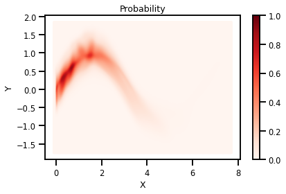

Gaussianization Flows - Details¶
#@title Install Packages
# %%capture
try:
import sys, os
from pyprojroot import here
# spyder up to find the root
root = here(project_files=[".here"])
# append to path
sys.path.append(str(here()))
except ModuleNotFoundError:
%%capture
import os
os.system("pip install objax chex")
os.system("pip install git+https://github.com/IPL-UV/rbig_jax.git#egg=rbig_jax")
# jax packages
import jax
import jax.numpy as np
from jax.config import config
# import chex
config.update("jax_enable_x64", False)
import objax
import chex
import numpy as onp
from functools import partial
# library functions
from rbig_jax.data import get_classic
from rbig_jax.plots import plot_joint, plot_joint_prob, plot_info_loss
from rbig_jax.transforms.mixture import MixtureGaussianCDF
from rbig_jax.transforms.inversecdf import InverseGaussCDF
from rbig_jax.transforms.linear import HouseHolder
from rbig_jax.transforms.base import CompositeTransform
# logging
import tqdm
import wandb
# plot methods
import matplotlib.pyplot as plt
import seaborn as sns
from IPython.display import HTML
sns.reset_defaults()
sns.set_context(context="talk", font_scale=0.7)
%matplotlib inline
%load_ext autoreload
%autoreload 2
Demo Data¶
from sklearn.preprocessing import StandardScaler
# %%wandb
# get data
n_samples = 2_000
n_features = 2
data = get_classic(10_000)
data = StandardScaler().fit_transform(data)
# plot data
plot_joint(data, "blue", "Original Data", kind='kde', logger=False)
<Figure size 432x288 with 0 Axes>
Model¶
n_samples = 5_000
n_features = 2
# generate data
data = get_classic(n_samples)
x_transform = StandardScaler()
data = x_transform.fit_transform(data)
X = np.array(data, dtype=np.float32)
X = jax.device_put(X)
sns.jointplot(X[:, 0], X[:, 1], s=5, color='red')
plt.savefig("./data.png")

n_plot_samples = 10_000
data_plot = get_classic(n_plot_samples)
data_plot = x_transform.transform(data_plot)
X_plot = np.array(data_plot, dtype=np.float32)
X_plot = jax.device_put(X_plot)
sns.jointplot(X_plot[:, 0], X_plot[:, 1], s=5, color='purple')
<seaborn.axisgrid.JointGrid at 0x7f3f53b7d8e0>

Layer 1 - Mixture Gaussian CDF Transform¶
%%time
# model components
n_components = 10
n_reflections = 10
# initialize model
layer_1 = MixtureGaussianCDF(n_features=n_features, n_components=n_components)
# forward transformation
X_l1, logabsdet = layer_1(X)
CPU times: user 1.66 s, sys: 23.4 ms, total: 1.69 s
Wall time: 1.63 s
# plot data
sns.jointplot(X_l1[:, 0], X_l1[:, 1], s=5, color='purple')
<seaborn.axisgrid.JointGrid at 0x7f3f53a54d90>

Layer III - Logit Transformation¶
# initialize model
model_layer2 = InverseGaussCDF()
# forward transformation
X_l2, logabsdet = model_layer2(X_l1)
/home/emmanuel/.conda/envs/jax_py38/lib/python3.8/site-packages/jax/lax/lax.py:6190: UserWarning: Explicitly requested dtype float64 requested in array is not available, and will be truncated to dtype float32. To enable more dtypes, set the jax_enable_x64 configuration option or the JAX_ENABLE_X64 shell environment variable. See https://github.com/google/jax#current-gotchas for more.
warnings.warn(msg.format(dtype, fun_name , truncated_dtype))
sns.jointplot(X_l2[:, 0], X_l2[:, 1], s=5, color='purple')
<seaborn.axisgrid.JointGrid at 0x7f3f537aab50>

Layer 3 - HouseHolder Transformation¶
# layer hyperparameters
learn = 10
n_reflections = 10
generator = objax.random.Generator(123)
# initialize model
model_layer3 = HouseHolder(n_features=n_features, n_reflections=n_reflections, generator=generator)
# forward transformation
Z, logabsdet = model_layer2(X_l2)
sns.jointplot(Z[:, 0], Z[:, 1], s=5, color='purple')
<seaborn.axisgrid.JointGrid at 0x7f3f5357fc40>

Gaussianization Flows¶
from rbig_jax.models.gaussflow import GaussianizationFlow
from rbig_jax.transforms.logit import Logit
# model hyperparameters
n_components = 20
n_reflections = 2
generator = objax.random.Generator(123)
learn_temperature = True
n_features = data.shape[1]
n_layers = 4
transforms = []
for _ in range(n_layers):
# mixture gaussian cdf distribution, f:[-inf,inf] -> [0,1]
transforms.append(
MixtureGaussianCDF(n_features=n_features, n_components=n_components)
)
# Logit quantile function, f:[0,1] -> [-inf,inf]
transforms.append(
Logit(learn_temperature=learn_temperature)
)
# orthogonal rotation layer
transforms.append(
HouseHolder(n_features=n_features, n_reflections=n_reflections, generator=generator)
)
# compose all transformations into a single chain
transform = CompositeTransform(transforms)
# initialize base distribution
base_dist = jax.scipy.stats.norm
# initialize Model
gf_model = GaussianizationFlow(n_features=n_features, bijections=transform, base_dist=base_dist)
Z, _ = gf_model(X)
sns.jointplot(Z[:, 0], Z[:, 1], s=5, color='red')
<seaborn.axisgrid.JointGrid at 0x7f3f53465250>

Loss Function¶
We’re going to use the negative Log-Likelihood
@objax.Function.with_vars(gf_model.vars())
def nll_loss(x):
return gf_model.score(x)
nll_loss(data)
DeviceArray(16.555227, dtype=float32)
Optimizer¶
# define the optimizer
opt = objax.optimizer.Adam(gf_model.vars())
# get grad values
gv = objax.GradValues(nll_loss, gf_model.vars())
lr = 0.01
epochs = 500
batch_size = 128
# define the training operation
@objax.Function.with_vars(gf_model.vars() + opt.vars())
def train_op(x):
g, v = gv(x) # returns gradients, loss
opt(lr, g)
return v
# This line is optional: it is compiling the code to make it faster.
train_op = objax.Jit(train_op)
Testing¶
import itertools
from jax import device_put
import tqdm
from jax import random
from celluloid import Camera
# initialize parameters
key = random.PRNGKey(123)
itercount = itertools.count()
permute_rng, rng = random.split(key)
losses = list()
# initialize figure
fig = plt.figure()
camera = Camera(fig)
pbar = tqdm.trange(epochs)
with pbar:
for i in pbar:
if (i + 1) % 20 == 0 or i < 20:
# make predictions
Z = gf_model.transform(X_plot)
plt.scatter(Z[:, 0], Z[:, 1], s=1, color="Red")
camera.snap()
# batch processing
permute_rng, rng = random.split(rng)
# randomly shuffle the data
train_data = random.permutation(permute_rng, X)
# Train
avg_loss = []
for batch_index in range(0, n_samples, batch_size):
# compute loss
loss = float(train_op( train_data[batch_index:batch_index+batch_size])[0])
# append batch
avg_loss.append(loss)
# average loss
batch_loss = np.mean(np.stack(avg_loss))
# Log losses
losses.append(batch_loss)
pbar.set_postfix({"loss": f"{batch_loss:.4f}"})
animation = camera.animate(250)
# HTML(animation.to_html5_video())
animation.save('training.gif')
100%|██████████| 500/500 [02:18<00:00, 3.62it/s, loss=1.8923]
WARNING:matplotlib.animation:MovieWriter ffmpeg unavailable; using Pillow instead.
Losses¶
plt.plot(losses)
[<matplotlib.lines.Line2D at 0x7f3f5a9e6670>]
Forward Transformation¶
# forward transformation
z, logabsdet = gf_model(np.array(data))
sns.jointplot(z[:, 0], z[:, 1], s=5, color='red')
<seaborn.axisgrid.JointGrid at 0x7f3f5a9f8160>
Application I - Generating Samples¶
# generate samples in the latent domain
n_gen_samples = 1_000
z_samples = objax.random.normal(shape=(n_gen_samples, n_features), generator=generator)
# inverse transformation
x_samples = gf_model.inverse_transform(z_samples)
sns.jointplot(x_samples[:, 0], x_samples[:, 1], s=5, color='purple')
<seaborn.axisgrid.JointGrid at 0x7f3f5a8a73d0>

Probability Density Estimation¶
ngrid = 1_000
buffer = 0.1
xline = np.linspace(data[:,0].min()-buffer, data[:,0].max()+buffer, ngrid)
yline = np.linspace(data[:,1].min()-buffer, data[:,1].max()+buffer, ngrid)
xgrid, ygrid = np.meshgrid(xline, yline)
xyinput = np.concatenate([xgrid.reshape(-1, 1), ygrid.reshape(-1, 1)], axis=1)
# forward transformation
z, logabsdet = gf_model(xyinput)
# log probability
z_prob = jax.scipy.stats.norm.logpdf(z).sum(axis=1)
# change of variables
log_prob = z_prob + logabsdet
cmap = "Reds"
probs = np.exp(log_prob)
# probs = np.clip(probs, 0.0, 1.0)
title = "Probability"
fig, ax = plt.subplots()
h = ax.scatter(xyinput[:, 0], xyinput[:, 1], s=1, c=probs, cmap=cmap, vmin=0.0, vmax=1.0)
plt.xlabel("X")
plt.ylabel("Y")
plt.colorbar(h)
ax.set_title(title)
plt.tight_layout()
plt.savefig("./probs.png")
plt.show()

Demo of Transform between Layers¶
# initialize figure
fig, ax = plt.subplots()
camera = Camera(fig)
outputs = data
# ax.scatter(outputs[:, 0], outputs[:, 1], s=1, color="Red")
# ax.set_xlim([outputs[:,0].min()-.1, outputs[:,0].max()+.1])
# ax.set_ylim([outputs[:,1].min()-.1, outputs[:,1].max()+.1])
# ax.text(0.4, 1.05, f"Layer: {0}", transform=ax.transAxes, fontsize=20)
# camera.snap()
for ilayer, itransform in enumerate(gf_model.bijections._transforms):
outputs = itransform.transform(outputs)
if (ilayer + 1) % 3 == 0:
# make predictions
ax.scatter(outputs[:, 0], outputs[:, 1], s=1, color="Red")
ax.set_xlim([outputs[:,0].min()-.1, outputs[:,0].max()+.1])
ax.set_ylim([outputs[:,1].min()-.1, outputs[:,1].max()+.1])
ax.text(0.4, 1.05, f"Layer: {int((ilayer+1)/3)}", transform=ax.transAxes, fontsize=20)
camera.snap()
animation = camera.animate(1_500)
# HTML(animation.to_html5_video())
animation.save('./layers.gif')
WARNING:matplotlib.animation:MovieWriter ffmpeg unavailable; using Pillow instead.